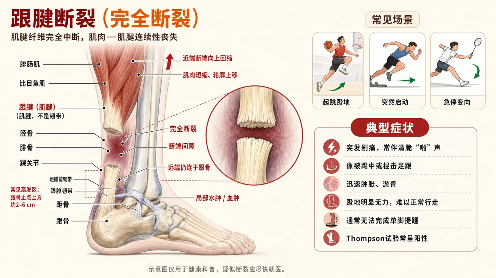

肿胀管理
按医嘱抬高、冷疗/加压和踝泵；保护靴与足位优先。
分别提供跟腱部分损伤非手术恢复与急性完全断裂手术修复后的完整路径
依据已经明确的治疗方式或受伤肌群选择一条路径，不要混用不同路径的早期限制。
训练外，只保留四项需要持续关注的内容。
先确认部分损伤和完全断裂术后不能共用一条时间线。
按医嘱抬高、冷疗/加压和踝泵；保护靴与足位优先。
轻放松髋周、股四头肌和小腿其他区域；不深压跟腱修复区。
切口闭合后再做；不因瘢痕紧提前背屈或拉伸。
疼痛、肿胀或推蹬能力变差时立即退阶。
急性完全断裂后，两条治疗路线都是正规选择。它们各有取舍，没有绝对的对错：
好处：再断裂率更低——大型对照研究里约为0.6%，非手术组约6.2%。
代价：手术伤口需要愈合，存在伤口愈合不良、感染等手术并发症风险。
好处：12个月后的功能与手术组相近，避免手术风险；即使再断，仍可再手术补救。
代价：再断裂率更高，需要严格的早期跖屈位保护和规范康复。
共同点：无论选哪条，早期跖屈位保护下的规范康复都是效果的基础；这个决定要在受伤早期（通常一两周内）和专科医生一起完成。
再断裂率0.6%对6.2%、12个月功能无差异：新英格兰医学杂志2022年多中心随机对照试验（本页参考文献1）。手术2.3%对非手术3.9%、手术并发症更高：BMJ 2019年荟萃分析（本页参考文献2）。
手术记录、伤口情况、保护靴角度和主刀团队的负重要求始终优先。
点击阶段可直接展开对应训练安排。
保护切口和修补组织，同时维持髋膝、足趾和躯干能力。
＋保护切口和修补组织，同时维持髋膝、足趾和躯干能力。
手术记录、伤口情况、保护靴角度和主刀团队的负重要求始终优先。
按支具要求保持踝部保护，完成足趾屈伸、直腿抬高、膝屈伸和侧卧髋外展。
增加髋膝训练阻力；踝部动作只按医嘱进阶。
伤口牵拉、支具内跟腱或踝部疼痛增加。
侧卧，上侧腿略向后抬起，脚尖朝前；避免骨盆后倒和腰部侧屈。
增加弹力带→改为站姿髋外展→加入单腿承重。
髋外侧锐痛、腰部代偿或动作幅度持续下降。
选择短杠杆侧桥、仰卧呼吸控制或坐位抗旋转，不让受伤脚承担额外负荷。
延长保持→增加杠杆→在允许承重后转入站姿。
憋气、腰部代偿或伤侧出现额外负荷。
按主刀要求使用拐杖和支具完成床椅转移；如果尚未允许负重，不让患侧触地承重。
先减少跛行→延长时间→提高速度或坡度。
症状逐段增加、步态明显改变或次日功能未回到基线。
在规定角度内恢复主动踝控制、轻负荷跖屈和保护靴步态。
＋在规定角度内恢复主动踝控制、轻负荷跖屈和保护靴步态。
手术记录、伤口情况、保护靴角度和主刀团队的负重要求始终优先。
只有在允许脱靴训练时进行；主动勾脚不超过当期规定角度，早期不强行超过中立位。
按医嘱逐步接近中立位并增加主动控制。
跟腱突然牵拉、塌陷感、疼痛或肿胀快速增加。
坐位前脚掌压地或轻弹力带向下踩，保持踝关节不内翻外翻。本动作属于术后早期抗阻负荷，须先经主刀确认当期角度与阻力。
增加弹力带→坐位提踵→双腿站立提踵。
跟腱局部疼痛、热胀或次日晨僵明显增加。
穿保护靴和对侧增高垫，使用必要辅助，练习对称步幅；不自行提前减楔或脱靴。
增加承重比例→延长距离→按医嘱逐步减楔和减少辅助。
跟腱牵拉突然增加、步态恶化或肿胀增加。
侧卧，上侧腿略向后抬起，脚尖朝前；避免骨盆后倒和腰部侧屈。
增加弹力带→改为站姿髋外展→加入单腿承重。
髋外侧锐痛、腰部代偿或动作幅度持续下降。
逐步恢复双腿提踵、比目鱼肌、单腿稳定和全下肢力量。
＋逐步恢复双腿提踵、比目鱼肌、单腿稳定和全下肢力量。
手术记录、伤口情况、保护靴角度和主刀团队的负重要求始终优先。
扶稳支撑，双脚均匀受力，缓慢抬高脚跟并控制下降；保持足弓。
增加负重→偏重患侧→进入单腿提踵。
损伤点疼痛逐组增加、提踵高度下降或次日晨僵明显。
坐位屈膝约90°，前脚掌着地，缓慢抬起和放下脚跟；膝上可逐步增加负荷。
增加膝上负荷→单腿完成→提高连续节奏。
小腿深部疼痛、跟腱反应或次日走路变差。
患侧踏上5–10厘米台阶，身体向上而不是向前冲，控制膝盖与骨盆方向。
提高台阶→减少手扶→手持负重。
蹬地借力、膝内扣、局部疼痛或次日症状增加。
患侧站稳，另一脚向前、侧、后方轻触；支撑脚维持足弓，必要时轻扶。
增加触及距离→减少手扶→加入轻负荷或不确定提示。
频繁失衡、疼痛增加或下肢明显塌陷。
恢复单腿小腿能力、弹跳、跑步和运动专项。
＋恢复单腿小腿能力、弹跳、跑步和运动专项。
手术记录、伤口情况、保护靴角度和主刀团队的负重要求始终优先。
轻扶支撑，完成尽可能完整的抬高和缓慢下降；保持膝与足尖方向一致。
增加负重→提高次数→加入快速提踵。
高度快速下降、疼痛或次日僵硬肿胀超过训练前。
双脚小幅离地并安静落地；先原地，再前后和侧向。
增加连续次数→增加方向→交替脚或单脚。
落地疼痛、僵硬、跛行或次日肿胀。
在步态正常、基础力量达标后，于平整地面短跑长走交替。
每2–3次稳定训练只增加跑量约10%–15%，之后再提高速度。
跑中跛行、症状逐段上升或次日未回到基线。
从分腿蹲或腿举、单腿屈髋、专项肌群抗阻和提踵中各选1项，记录负荷。
小幅加重或增加组数，避免与高强度跑跳同时大量增加。
动作质量下降、次日功能倒退或局部持续疼痛。
仅适用于影像和专科评估确认的部分损伤。撕裂位置、范围和症状差异较大，鞋跟垫、保护靴、允许负重与活动范围以医疗方案为准。
点击阶段可直接展开对应训练安排。
保护受损区域、控制症状，并维持髋膝、足趾和基本活动能力。
＋保护受损区域、控制症状，并维持髋膝、足趾和基本活动能力。
仅适用于影像和专科评估确认的部分损伤。撕裂位置、范围和症状差异较大，鞋跟垫、保护靴、允许负重与活动范围以医疗方案为准。
按保护要求固定或垫高踝部，完成足趾屈伸、直腿抬高、膝屈伸和侧卧髋外展。
先增加髋膝训练阻力；踝部活动只按医疗计划推进。
动作使跟腱局部疼痛增加，或患侧意外承担额外负荷。
仅在专业人员允许后进行；踝保持减载位置，前脚掌轻压毛巾或地面，不做强力蹬踩和背屈拉伸。
先延长到8–10秒，再小幅提高用力；不以疼痛测试强度。
损伤点锐痛、局部热胀或收缩后走路明显变差。
是否使用保护靴、鞋跟垫或拐杖以及允许负重程度，以影像和专科方案为准；保持步幅短而稳定。
先改善步态，再延长时间；一次只增加一个变量。
跛行加重、疼痛逐段上升，或次日症状未回到训练前。
侧卧，上侧腿略向后抬起，脚尖朝前；避免骨盆后倒和腰部侧屈。
增加弹力带，再过渡到允许承重后的站姿髋外展。
髋外侧锐痛、腰部代偿或跟腱区域受到牵拉。
在允许范围内恢复踝关节主动控制和低负荷跖屈能力。
＋在允许范围内恢复踝关节主动控制和低负荷跖屈能力。
仅适用于影像和专科评估确认的部分损伤。撕裂位置、范围和症状差异较大，鞋跟垫、保护靴、允许负重与活动范围以医疗方案为准。
坐位完成跖屈、轻度内外翻及专业人员允许范围内的背屈；不做负重末端背屈拉伸。
先增加动作控制，再小幅扩大范围；范围上限以复查意见为准。
锐痛、明显弹响、肿胀增加或次日活动能力下降。
坐位以前脚掌轻压地面或弹力带，缓慢跖屈并控制返回；避免快速弹动。
增加弹力带阻力，再进入坐位提踵。
损伤点疼痛逐组增加、局部热胀或次日晨僵明显。
坐位屈膝约90°，缓慢抬起和放下脚跟；动作范围和鞋跟垫使用遵循医疗计划。
增加膝上轻负荷，再增加次数和完整高度。
提踵高度连续下降、损伤点锐痛或次日走路变差。
从较高椅面起立和坐下，保持足底稳定；必要时使用鞋跟垫并限制踝背屈。
降低椅面，再小幅增加负重；不同时增加深度和重量。
跟腱牵拉感增加、明显偏向健侧或次日症状上升。
恢复双腿小腿力量、步态、单腿稳定和全下肢承重能力。
＋恢复双腿小腿力量、步态、单腿稳定和全下肢承重能力。
仅适用于影像和专科评估确认的部分损伤。撕裂位置、范围和症状差异较大，鞋跟垫、保护靴、允许负重与活动范围以医疗方案为准。
扶稳支撑，双脚均匀受力，缓慢抬高脚跟并控制下降；不在台阶边缘追求过度下放。
增加负重，再逐步偏重患侧。
损伤点疼痛逐组增加、提踵高度下降或次日晨僵明显。
坐位膝上放置可控负荷，完成完整、缓慢的提踵。
小幅增加负重，再过渡到单侧完成。
局部疼痛、明显热胀或动作幅度持续下降。
患侧踏上5–10厘米台阶，身体向上而不是向前冲，控制膝盖和骨盆方向。
提高台阶，再减少手扶或增加负重。
蹬地借力、下肢对线失控或跟腱反应增加。
患侧站稳，另一脚向前、侧、后方轻触；必要时轻扶。
增加触及距离，再减少手扶或加入轻负荷。
频繁失衡、疼痛增加或下肢明显塌陷。
建立单腿小腿力量和弹性，逐步恢复跑步及专项活动。
＋建立单腿小腿力量和弹性，逐步恢复跑步及专项活动。
仅适用于影像和专科评估确认的部分损伤。撕裂位置、范围和症状差异较大，鞋跟垫、保护靴、允许负重与活动范围以医疗方案为准。
轻扶支撑，必要时用健侧少量辅助上提，患侧控制下降。
减少健侧辅助，再增加次数或手持负重。
高度快速下降、明显疼痛或次日晨僵肿胀增加。
在单腿提踵和快走达标后，双脚小幅离地并安静落地。
增加连续次数，再进入前后、侧向和单脚变化。
落地疼痛、动作僵硬、跛行或次日肿胀。
从平整地面短跑长走开始，保持步态稳定和推进对称。
每2–3次稳定训练只增加总跑量约10%–15%，之后再提高速度。
跑中跛行、症状逐段上升，或次日未回到基线。
选择深蹲或腿举、单腿屈髋、分腿蹲和提踵各1项，记录负荷并保持动作质量。
小幅增加负重或组数，避免与高强度跑跳同日堆叠过多。
动作质量下降、关节或跟腱反应持续增加。
跟腱病（含末端病）是「肌腱过载后没有完全适应」的问题，不是撕裂。本路径以疼痛监测为核心，逐步把负荷耐受练回来。若发生过突然断裂或已确诊部分撕裂，请使用对应路径。
点击阶段可直接展开对应训练安排。
建立疼痛监测规则，让跟腱先「冷静」，同时开始等长收缩。
＋把训练量控制在疼痛安全带内，并开始等长提踵。
疼痛不是敌人，是仪表盘——严格按数字规则执行。
0–3分：正常训练；4–5分：可以训练，但次日必须回到基线，否则退一档；不低于6分、疼痛位置向小腿上方蔓延或次日晨僵加重：减量并退回上一阶段。
连续一周处于0–3分带，即可按计划推进抗阻。
疼痛持续上行，或突然出现「被踢一脚」样的剧痛（警惕断裂，立即就医）。
双脚前掌踩台阶或厚书，踮起到中等高度停住，在无痛角度内保持。
延长保持时间，再过渡到单腿等长。
保持中疼痛超过5分，或次日晨僵明显加重。
从深蹲或腿举、单腿屈髋、核心练习中各选1项，避开踝关节大幅背屈的拉伸动作。
随阶段二恢复踝部负荷后合并进常规计划。
跟腱疼痛随训练上行。
从双腿到单腿、从向心到含离心的提踵体系，把负荷逐步加回跟腱。
＋建立双腿与单腿提踵的力量基础，下放阶段放慢。
每次只加一个变量；离心下放约3秒。
站台阶上前掌踩边，踮起后用约3秒缓慢下放到略低于水平的位置。
背包或手持负重加阻。
跟腱局部疼痛逐组上行。
坐位，膝上放可控负荷，前掌踩地或踏板完成全程提踵。
加负荷，再过渡到单腿。
深层酸胀转为尖锐疼痛。
扶墙单腿完成提踵，下放阶段控制速度。
加次数，再负重，最后不扶墙。
提踵高度骤降或明显耸肩代偿。
重建跟腱的「弹簧」功能：快速提踵、小跳、走跑交替，最后回到专项。
＋把力量转化为弹性，按计划恢复跑跳与专项。
储能类动作隔天安排，给组织修复留时间。
踮起快速、下放受控，逐渐提高节奏。
过渡到单腿快速提踵。
跟腱局部灼痛上行。
双足低幅连续跳或跳绳，落地轻，用踝和膝一起缓冲。
延长时间，再进入交替跳、单足跳。
次日晨僵明显加重。
例如「跑1分钟走2分钟」×8轮起步，按24小时反应推进；逐步加入项目需要的蹬地与变向练习。
连续慢跑，再回到专项训练。
跑后跛行，或疼痛上行到4分以上。
优先选择最符合本阶段目标的动作，不要求一次完成全部内容。
次日疼痛、肿胀和功能回到训练前水平，再维持或小幅进阶。
幅度、阻力、组数、速度或复杂度只调整一项，便于判断真实反应。
每周固定一天测一次，记录下来对比变化。
怎么测：每天起床留意跟腱发僵持续几分钟。
看什么：短于15分钟且趋势下降，说明负荷量合适。
怎么测：前掌踩同一级台阶，双腿分别踮到最高，看高度差。
看什么：差距缩小＝小腿链条在恢复。
怎么测：睁眼单腿站，目标30秒，两侧对比。
看什么：回归跑跳前的基本盘。
根据已明确的诊断、手术记录和医嘱，打开与你一致的路径。

以下资料用于支持本内容的阶段原则和安全边界；它们不能替代对个人的临床判断。访问日期：2026-08-20。中文编写另参考《骨科术后康复》（AAOS授权中文版）等权威书籍的相关章节作为背景资料。
重点阅读版 · 请结合已经明确的诊断、术式和专业建议使用